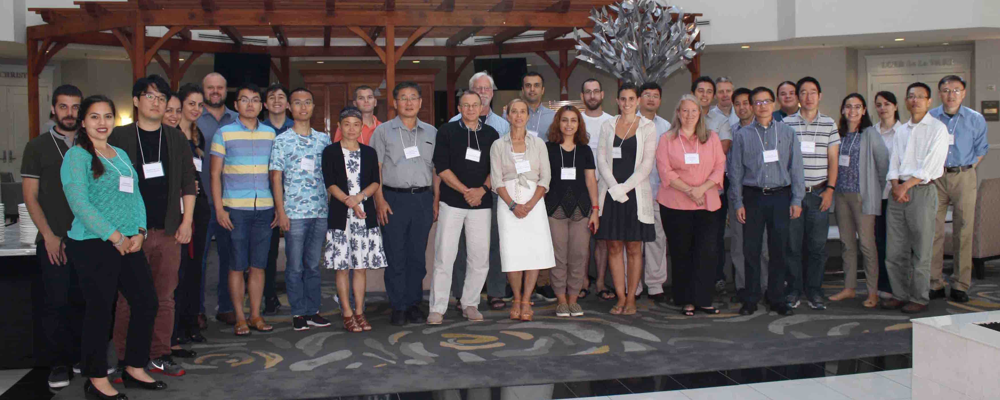

FUNWAVE-TVD Workshop 2017¶
FUNWAVE-TVD Training Workshop was held at the University of Delaware, Newark, DE from 25-27 July 2017. This workshop was organized by the Center for Applied Coastal Research (CACR), University of Delaware and the US Army Engineer Research and Development Center (ERDC).
The three-day workshop included training sessions for new users, as well as technical talks from community of practicing and experienced users. Topics cover the modeling of nearshore surface waves and processes such as harbor resonance, nearshore wave transformation, refraction and diffraction with complex geometries, nearshore circulation, wave interaction with reefs and vegetation, and tsunami propagation and inundation from ocean basin-to nearshore scales. New features, such as modeling of ship wave generation and the corresponding effects on adjacent shorelines, meteotsunami simulation, as well as ongoing coupling work with NHWAVE were also introduced during the workshop.
The workshop was hosted on Mills Cluster
Presentations
Note
Click pdf to download presentations
Boussinesq model theory and FUNWAVE – Jim Kirby, pdf1
FUNWAVE-TVD development – Fengyan Shi, pdf2
Model development and applications for the US Army Corps of Engineers – Matt Malej, pdf3
Wave forecasting of North Busan Port using FUNWAVE-TVD – Seungnam Seo, pdf4
Boussinesq Modeling of Wave Induced Hydrodynamics in Coastal Wetlands during Hurricane Isaac – Jim Q. Chen, pdf5
Numerical modeling of wave interactions with flexible vegetation – Navid Tahvildari, pdf6
Wave model applications for flood mitigation design – Shan Zou, pdf7
Optimization in FUNWAVE-TVD with parallel I/O – Michael Lam, pdf8
FUNWAVE-TVD Benchmarks in HR Wallingford – Nigel Tozer, pdf9
Introduction to a nonhydrostatic wave model – NHWAVE, Fengyan Shi, pdf10
Coupling between FUNWAVE–TVD and NHWAVE in Tsunami applications – cases of Tohoku 2011 and Landslide tsunamis on US east Coast – Stephan Grilli, pdf11
Sediment transport module in FUNWAVE-TVD – Jim Kirby, pdf12
Boussinesq Model applied to Harbour agitation and Resonance, for laboratory and field data – Gabriel Díaz-Hernández, pdf13
Earthquake-induced Tsunami Risk in the Cascadia Subduction Zone – Rozita Jalali,Farahani, pdf14
Tutorial
You can download the tutorial - click here
Attendees
Mahsa Arabi (Stony Brook University)
Katherine Labuhn (Army Corps of Eng - Detroit)
Qin J Chen (Louisiana State University)
Drew Condon (Army Corps of Eng - Jacksonville)
Gabriel Diaz-Hernandez (UNICAN-IHCantabria University)
Yumei Ding (Tianjin Univ. Sci. and Tech. )
Celso Ferreira (George Mason University)
Stephan Grilli (University of Rhode Island)
Annette Grilli (University of Rhode Island)
Kelin Hu (Louisiana State University)
Jim Kirby (University of Delaware)
Rozita Jalali Farahani(Risk Management Solutions)
Rozita Kian (TAMU)
Michael Lam (Army Corps of Eng, CHL)
Jonghyun Harry Lee (Stanford Univ.)
Kelly Legault (Army Corps of Eng - Jacksoville)
Arslaan Khalid(George Mason University)
Wenwen Li (AECOM)
Matt Malej (Army Corps of Eng, CHL)
Rachel Malburg (Army Corps of Eng - Detroit)
Fatima Nemati (University of Rhode Island)
Fernando Salazar Monroy (National Autonomous University of Mexico)
Gabriela Salgado-Dominguez (CHL - USACE)
Lauren Schambach (University of Rhode Island)
Seungnam Seo (Korea Institue of Ocean Science and Technology)
Fengyan Shi (University of Delaware)
Navid Tahvildari (Old Dominion University)
Nigel Tozer (HR Wallingford)
Panagiotis Vasarmidis (Uhent University)
Gregory Westcott (University of Rhode Island)
India Woodruff (University of Delaware)
Long Xu (Woods Hole Group)
Yilang Xu (Stanford Univ.)
Shouxian Zhu (Hohai Univ.)
Shan Zou (ARCADIS)

Download all photos (the previous link didn’t work, try this)